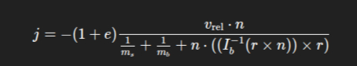

Represent the box with rotational properties
- [x] rotation represented (quaternion)
- [ ] angular velocity (vec3)
- [ ] inertia tensor (mat3)
- [ ] inverse inertia tensor for easier calculations
Compute collision impulse at contact
- [ ] compute relative velocity at contact point relativevelocity = vsphere - (vbox + omegabox X r) where r is the vector from the box center to contact point omega (W) is the angular velocity X is the cross product
- [ ] compute the impulse scalar
